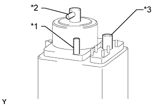
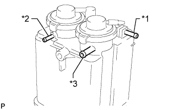

АДСОРБЕР > ПРОВЕРКА |
| 1. ПРОВЕРЬТЕ АДСОРБЕР (для моделей с одиночным баком) |
Осмотрите адсорбер и убедитесь в отсутствии трещин и повреждений.
При выявлении трещин или повреждения замените адсорбер.
|  |
Проверьте адсорбер с помощью SST.
| Условия измерений | Заданные условия |
| Каналы B и C перекрыты, в канале A создано разрежение [1,96 кПа (15 мм рт. ст., 0,579 дюйма рт. ст.)] | Нет утечки |
| Канал C перекрыт, в канале A создано разрежение [1,96 кПа (15 мм рт. ст., 0,579 дюйма рт. ст.)] | Воздух выходит из канала B |
| Канал C перекрыт, воздух подается в канал A [4,71 кПа (0,05 кгс/см2, 0,7 фунта на кв. дюйм)] | Воздух выходит из канала B |
| Воздух подается в канал A [4,71 кПа (0,05 кгс/см2, 0,7 фунта на кв. дюйм)] | Воздух выходит из каналов B и C |
| *1 | Патрубок A |
| *2 | Патрубок B |
| *3 | Патрубок C |
| 2. ПРОВЕРЬТЕ АДСОРБЕР (для моделей с двойным баком) |
Осмотрите адсорбер и убедитесь в отсутствии трещин и повреждений.
При выявлении трещин или повреждения замените адсорбер.
|  |
Проверьте адсорбер с помощью SST.
| Условия измерений | Заданные условия |
| Каналы B и C перекрыты, в канале A создано разрежение [1,96 кПа (15 мм рт. ст., 0,579 дюйма рт. ст.)] | Нет утечки |
| Канал C перекрыт, воздух подается в канал A [4,71 кПа (0,05 кгс/см2, 0,7 фунта на кв. дюйм)] | Воздух выходит из канала B |
| Канал C перекрыт, воздух подается в канал B [4,71 кПа (0,05 кгс/см2, 0,7 фунта на кв. дюйм)] | Воздух выходит из канала A |
| Воздух подается в канал A [4,71 кПа (0,05 кгс/см2, 0,7 фунта на кв. дюйм)] | Воздух выходит из каналов B и C |
| *1 | Патрубок A |
| *2 | Патрубок B |
| *3 | Патрубок C |